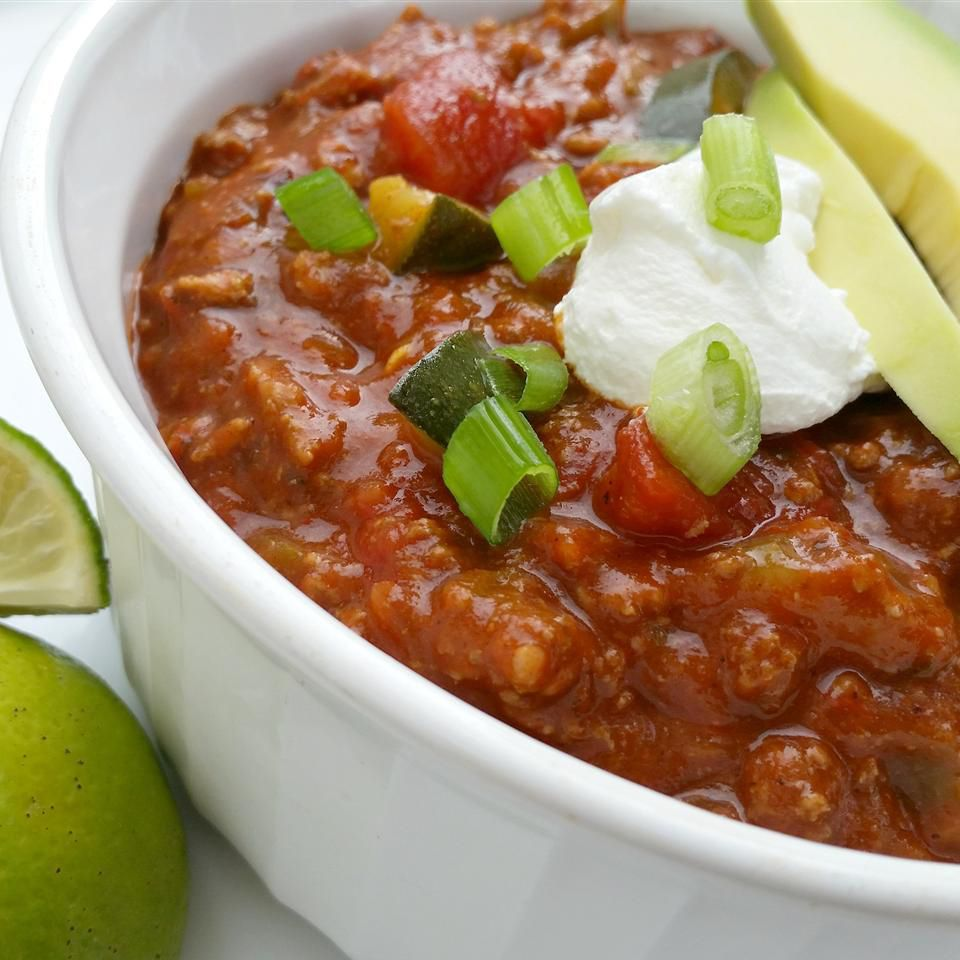

Terrific Turkey Chili

Description
Using some fresh and some canned ingredients, this chili is a snap to throw together and will keep you craving it for days.
Ingredients
- 3 tablespoons vegetable oil, divided
- 1 ½ pounds ground turkey
- 1 (1 ounce) package taco seasoning mix
- 1 teaspoon ground coriander
- 1 teaspoon dried oregano
- 1 teaspoon chili pepper flakes
- 2 tablespoons tomato paste
- 1 (14.5 ounce) can beef broth
- 1 (7 ounce) can salsa
- 1 (14.5 ounce) can crushed tomatoes, or coarsely chopped tomatoes packed in puree
- 1 (7 ounce) can chopped green chile peppers
- 1 medium onion, finely chopped
- 1 green bell pepper, diced
- 1 bunch green onions, chopped
- 1 cup sour cream
- 1 cup shredded Cheddar cheese
Steps
- Heat 1 tablespoon of oil in a large stock pot over medium-high heat. Crumble turkey into the pot, stirring with a wooden spoon to break apart as much as possible. Season with taco seasoning mix, coriander, oregano, chili flakes, and tomato paste, and mix until meat is evenly coated with seasonings. Continue cooking, reducing heat if necessary, until turkey is well browned.
- Pour in beef broth, and simmer to reduce liquid slightly, about 5 minutes. Add salsa, tomatoes, and green chilies, and continue cooking at a moderate simmer for ten minutes. Adjust the thickness at any time you feel necessary by adding water.
- While chili is still cooking, heat one tablespoon of oil in a large skillet over medium-high heat. Cook onion and green bell pepper, stirring occasionally for 5 minutes, or until onion is translucent and bell pepper is lightly browned. Add onion and bell pepper to the chili, and continue cooking at a very low simmer.
- Ladle chili into serving bowls. Top with sour cream, green onion, and cheddar cheese, and serve.